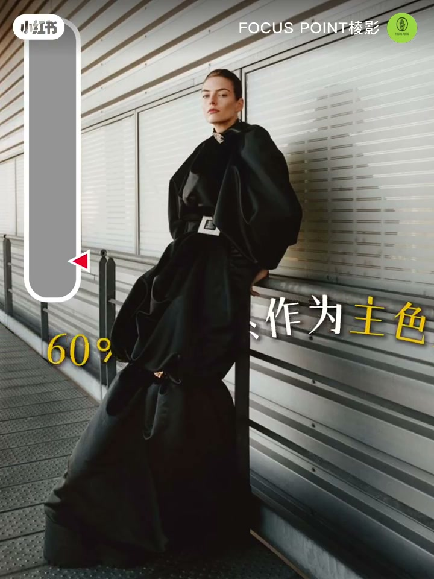
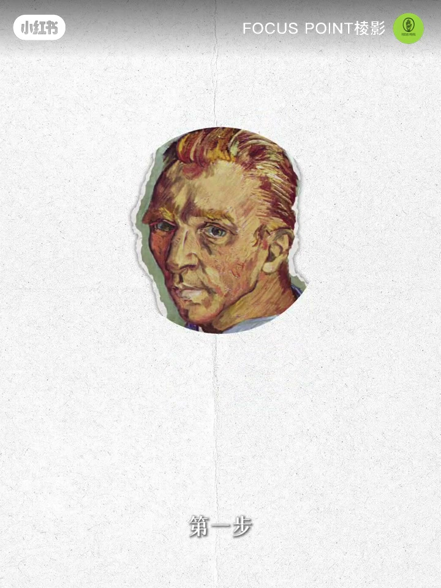
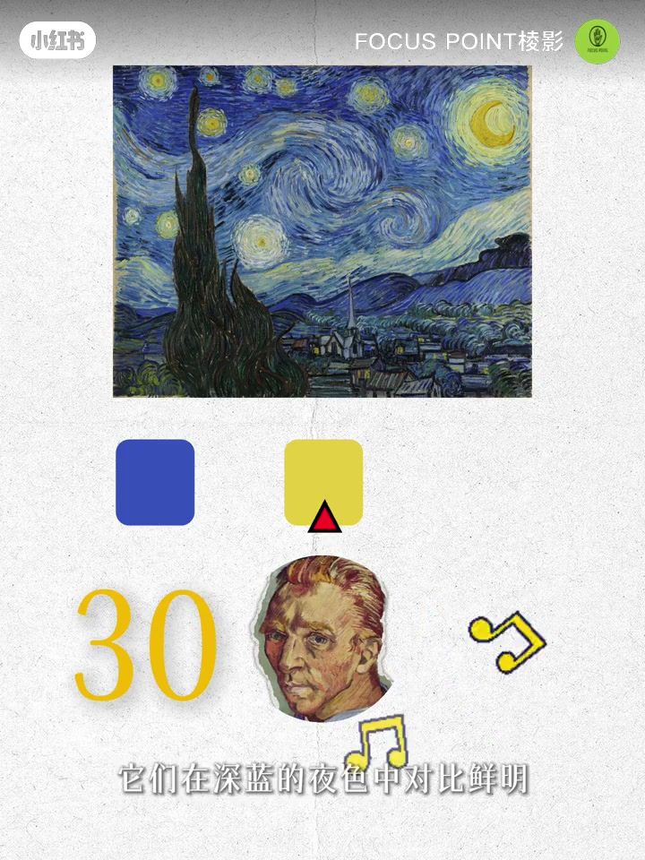
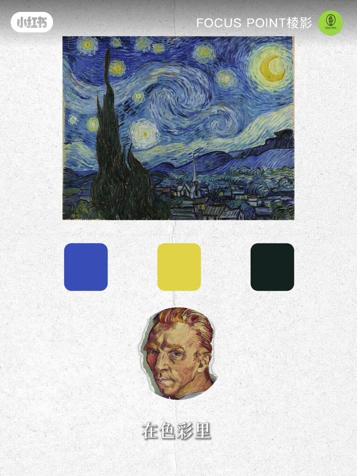
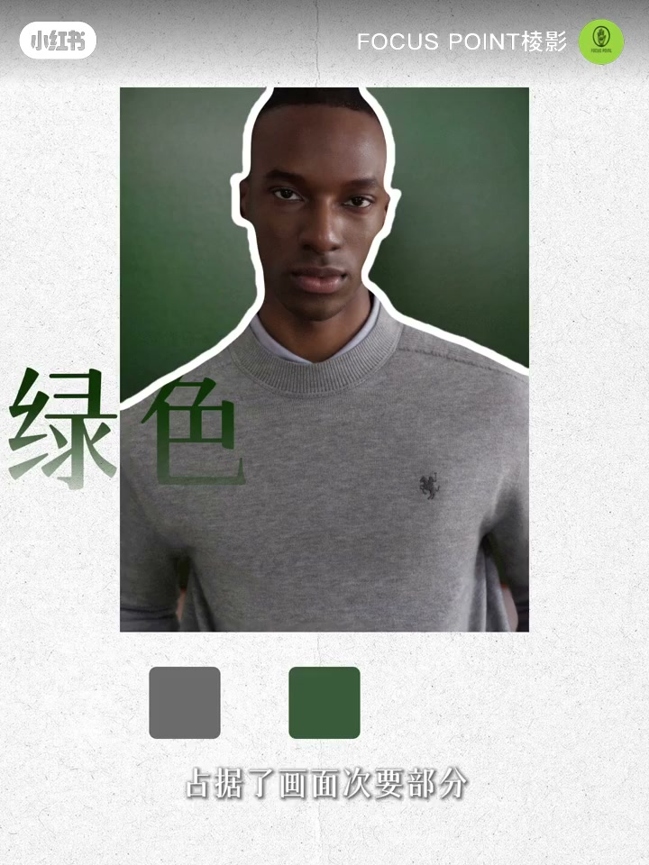
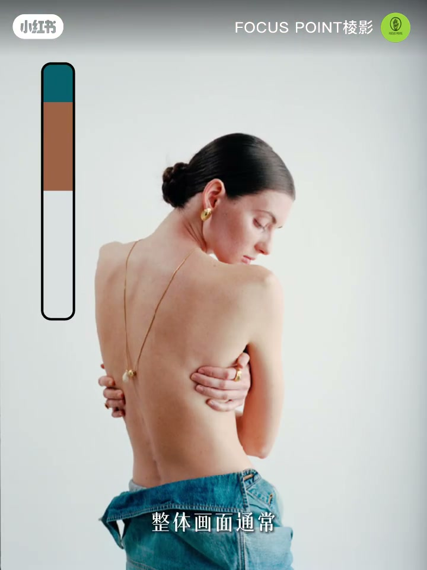
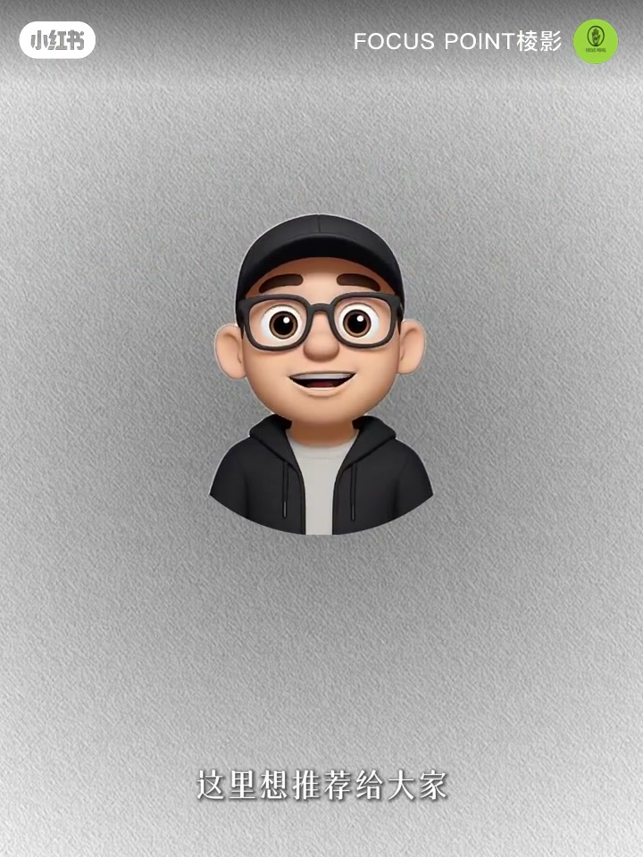
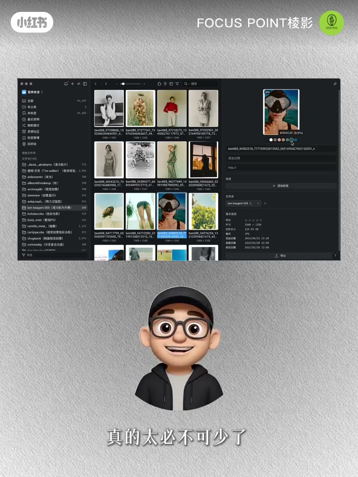

内容要点
「🎨拯救配色废柴！照片从土味到高级」教程要点：拍摄的时候总把控不好画面色彩关系 → 来试试黄金配色6比3比1法则 → 它的逻辑其实很简单 → 集在一个画面中；详见正文。
知识结构
拍摄的时候总把控不好画面色彩关系
最小的一份比例
强调服装材质与反差色彩的巧妙结合
- 拍摄的时候总把控不好画面色彩关系
- 来试试黄金配色6比3比1法则
- 它的逻辑其实很简单
- 集在一个画面中
- 60%的色系作为主色系
拍摄的时候总把控不好画面色彩关系
00:00–00:55拍摄的时候总把控不好画面色彩关系
拍摄的时候总把控不好画面色彩关系；来试试黄金配色6比3比1法则；它的逻辑其实很简单；集在一个画面中；60%的色系作为主色系；30%的色系作为辅助色系；10%的色系作为点缀色系；用来打破画面的沉浸；付出主体；我是摄影师K；接下来带你一步步解锁这个配色密集；学会之后你的作品不仅更有层次感；色彩掌控力也会瞬间UP；一起来挖掘属于画面色彩的黄金密码吧；第一步；我们先跟随世界名画大师的脚步来探索；看看他们到底是怎么用配色；樊高星夜；色彩里的黄金绿冻；60%深蓝的夜空与群山；画面的大基调是无边的蓝；它沉稳；隐列；成为一切色彩的背景；30%明亮的星辰与月亮；黄色星光与蜿蜒像跳跃的音符；他们在深蓝的夜色中对比鲜明；带来绿冻感与温度；10%深色的柏树与村落


00:54–01:44最小的一份比例
最小的一份比例；却是最有重量的茅点；柏树直冲夜空；村落安静守候；他们让画面有了重心和张力；这正是樊高的天才之处；用60%的宁静；30%的明亮；10%的力量；在色彩里写下了他心灵的狂想；第二步；回归到我们现实拍摄的平面作品；在这张照片里；我们可以清晰看到色彩比例的拿捏；60%灰色真枝作为画面大面积的色彩；稳定又低调；为整体画面打下基调；30%绿色背景；占据了画面次要部分；和灰色形成冷色调的呼应；让氛围更高级；10%模特肤色；恰到好处的点亮了画面；打破单调；同样的配色比例；在Lookbook中同样适用；他追求极简；实用与形式上的纯粹感；注重留白


01:42–02:34强调服装材质与反差色彩的巧妙结合
强调服装材质与反差色彩的巧妙结合；整体画面通常以一种主色调定基调；再通过辅助色与点缀色的搭配；既营造出明确的主次关系；又延展出空间感；小比例的高饱和色彩；不会破坏画面的和谐；反而能增添层次与故事感；如果大家对自己的色彩分析；还没有太大把握；其实完全可以借助一些软件工具来辅助；这里想推荐给大家一款我常用的工具；Vigo；只要把图片导入；它就能自动分析出画面中的配色；并且还会计算每种颜色；在画面里的比例超级直观；而且它不仅仅是配色分析工具；还是一款非常强大的图片整理软件；对于摄影师来说；在日常积累审美；建立素材库的过程中；真的太逼不可少了；这边绝对不是广告；纯粹是我自己用下来觉得很实用；分享给大家的小心得；今天的分享就到这里了；我们下期见；拜拜




口述/画面要点（40段）
结合 Whisper medium 与画面大字整理；专有名词已校对。
拍摄的时候总把控不好画面色彩关系
来试试黄金配色6比3比1法则
它的逻辑其实很简单
集在一个画面中
60%的色系作为主色系
30%的色系作为辅助色系
10%的色系作为点缀色系
用来打破画面的沉浸
付出主体
我是摄影师K
接下来带你一步步解锁这个配色密集
学会之后你的作品不仅更有层次感
色彩掌控力也会瞬间UP
一起来挖掘属于画面色彩的黄金密码吧
第一步
我们先跟随世界名画大师的脚步来探索
看看他们到底是怎么用配色
樊高星夜
色彩里的黄金绿冻
60%深蓝的夜空与群山
画面的大基调是无边的蓝
它沉稳
隐列
成为一切色彩的背景
30%明亮的星辰与月亮
黄色星光与蜿蜒像跳跃的音符
他们在深蓝的夜色中对比鲜明
带来绿冻感与温度
10%深色的柏树与村落
最小的一份比例
却是最有重量的茅点
柏树直冲夜空
村落安静守候
他们让画面有了重心和张力
这正是樊高的天才之处
用60%的宁静
30%的明亮
10%的力量
在色彩里写下了他心灵的狂想
第二步